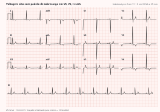

Cardiologia · 75 min · SBC/SBH/SBN 2025 e AHA/ACC 2025 · monografia
Duas diretrizes saíram em 2025 e não dizem a mesma coisa. A brasileira manteve o diagnóstico em 140/90 mmHg, criou uma faixa larga de pré-hipertensão a partir de 120/80, fixou meta única de menos de 130/80 para todo hipertenso e mandou começar com dois fármacos na maioria. A americana já chama de hipertensão a partir de 130/80 e guarda a dupla para o estágio 2. A prova brasileira cobra a régua da SBC — e cobra onde as duas se afastam.
A Diretriz Brasileira de Hipertensão Arterial de 2025, de Brandão e colaboradores pela SBC, SBH e SBN, substitui a de 2020; a americana, de Jones e colaboradores pela AHA/ACC, saiu em setembro do mesmo ano. Ler as duas lado a lado é o melhor investimento de tempo para prova: cada divergência é uma questão pronta.
| Tema | SBC/SBH/SBN 2025 | AHA/ACC 2025 |
|---|---|---|
| Diagnóstico no consultório | ≥ 140 e/ou 90 mmHg, em duas ocasiões | ≥ 130 e/ou 80 mmHg |
| Faixa intermediária | Pré-hipertensão 120–139 e/ou 80–89 | PA elevada 120–129 e < 80; 130–139/80–89 já é estágio 1 |
| Meta | < 130/80 para todo hipertenso, qualquer que seja o risco | Sistólica < 130 com estímulo a chegar a < 120; diastólica < 80 |
| Início com dois fármacos | Para a maioria, em doses baixas e comprimido único | Só no estágio 2; no estágio 1, monoterapia é razoável |
| Rastreio de hiperaldosteronismo | Preparar o paciente e suspender o antagonista mineralocorticoide | Rastrear toda resistente, com ou sem hipocalemia, mantendo os demais fármacos |
Não existe hipertensão bem tratada com medida malfeita. A diretriz recomenda equipamento automático de braço validado (FORTE, MODERADA) e um protocolo que a maioria dos consultórios não cumpre — é assim que se fabrica pseudorresistência.
Três métodos que a diretriz exclui: o teste ergométrico não é diagnóstico; a automedida sem protocolo serve só de triagem para indicar MAPA ou MRPA; e os dispositivos sem manguito recebem da AHA/ACC 2025 um classe 3 "sem benefício", nível C-LD.
| SBC 2025 | Sistólica | Diastólica | |
|---|---|---|---|
| PA normal | < 120 | e | < 80 |
| Pré-hipertensão | 120–139 | e/ou | 80–89 |
| Estágio 1 | 140–159 | e/ou | 90–99 |
| Estágio 2 | 160–179 | e/ou | 100–109 |
| Estágio 3 | ≥ 180 | e/ou | ≥ 110 |
A "PA ótima" foi removida, e a faixa que em 2020 se chamava "PA normal" — 120 a 129 e/ou 80 a 84 — foi absorvida pela pré-hipertensão: o paciente de 126/82 mmHg saía ouvindo que estava tudo bem e hoje sai com rótulo, com indicação formal de medidas não medicamentosas e, se o risco for alto, de fármaco. Classifica-se pelo nível mais elevado; a sistólica isolada — ≥ 140 com diastólica < 90 — estagia-se pela sistólica, e a diastólica isolada, pela diastólica. O diagnóstico exige medidas em duas ou mais visitas; dispensam a espera o estágio 3 e quem já tem lesão de órgão-alvo ou doença cardiovascular estabelecida.
Sempre que viável, MAPA e MRPA devem confirmar o diagnóstico e monitorar o tratamento (FORTE, ALTA): predizem risco melhor que o consultório. Os cortes mudam de método para método, e trocá-los é erro de prova garantido.
| Categoria | Sistólica | Diastólica | |
|---|---|---|---|
| Consultório | ≥ 140 | e/ou | ≥ 90 |
| MAPA — 24 horas | ≥ 130 | e/ou | ≥ 80 |
| MAPA — vigília | ≥ 135 | e/ou | ≥ 85 |
| MAPA — sono | ≥ 120 | e/ou | ≥ 70 |
| MRPA | ≥ 130 | e/ou | ≥ 80 |
A MAPA é o padrão-ouro: cobre as 24 horas, o sono e a elevação matinal. A MRPA custa menos e favorece a adesão, mas mede só na vigília e depende de treinar o paciente.
flowchart TD
A["Medida correta: 3 aferições, média das duas últimas"] --> B{"PA ≥ 180/110 ou LOA já estabelecida?"}
B -->|"sim"| C["Diagnóstico sem segunda visita"]
B -->|"não"| D{"PA ≥ 140 e/ou 90?"}
D -->|"sim"| E["Repetir em nova visita"]
D -->|"não: 120–139 e/ou 80–89"| F["Pré-hipertensão
MNM e escore PREVENT"]
E --> G["MAPA ou MRPA sempre que viável"]
F --> H{"Suspeita de mascarada?
diabetes · obesidade · LOA com PA normal"}
H -->|"sim"| G
H -->|"não"| I["Seguimento com MNM"]
G --> J{"Fora do consultório ≥ 130/80?"}
J -->|"consultório alto · fora normal"| K["Avental branco"]
J -->|"consultório normal · fora alto"| L["Mascarada: tratar como sustentada"]
J -->|"os dois altos"| M["Hipertensão sustentada"]
J -->|"os dois normais"| N["Normotensão verdadeira"]

A avaliação tem três alvos: confirmar a hipertensão, procurar causa secundária e medir o risco — que é o que define o fármaco na pré-hipertensão. Pesquisar fatores de risco e lesão de órgão em todo paciente no diagnóstico, repetindo anualmente (FORTE, BAIXA). Rotina: urina tipo I; potássio; creatinina com filtração estimada pelo CKD-EPI; relação albuminúria/creatininúria; glicemia e hemoglobina glicada se há risco de diabetes; perfil lipídico; ácido úrico; e eletrocardiograma. Cada item tem motivo — o potássio abre a porta do hiperaldosteronismo, a albuminúria é o marcador que responde mais rápido ao tratamento.
| Órgão · método | Critério de lesão de órgão-alvo |
|---|---|
| Coração · ECG | Sokolow-Lyon — S de V1 + R de V5 ou V6 — > 35 mm; R de aVL ≥ 11 mm; Cornell — S de V3 + R de aVL — > 28 mm em homens e > 20 mm em mulheres |
| Coração · eco | Massa ventricular indexada ≥ 116 g/m² em homens ou ≥ 96 g/m² em mulheres |
| Grandes vasos | Índice tornozelo-braquial < 0,9; placa em carótidas; onda de pulso carotídeo-femoral ≥ 10 m/s |
| Rim e retina | TFGe < 60 mL/min/1,73 m² — DRC a partir do estágio 3a; albuminúria ≥ 30 mg/24 h ou relação ≥ 30 mg/g; retinopatia de Keith-Wagener-Barker |
A estratificação usa o escore PREVENT (FORTE, ALTA), que estima risco cardiovascular total em 10 e 30 anos, dos 30 aos 79 anos. Em paralelo, mantém-se a tabela que cruza estágio, fatores de risco e lesão de órgão: sem fatores, pré-hipertensão e estágio 1 são risco baixo e o estágio 3 é alto; com 3 ou mais fatores, tudo a partir do estágio 1 é alto; com lesão de órgão, DRC estágio 3 ou diabetes, é alto já na pré-hipertensão; com doença cardiovascular estabelecida, é muito alto em qualquer faixa. Contam como fatores: sexo masculino, idade acima de 55 anos no homem e 65 na mulher, história familiar precoce, tabagismo, dislipidemia e IMC ≥ 30 kg/m².
| Início de tratamento e metas — SBC 2025 | Força |
|---|---|
| Medidas não medicamentosas para todos com PA ≥ 120/80 mmHg | FORTEalta |
| Tratamento medicamentoso após 3 meses de MNM para PA 130–139/80–89 com alto risco | FORTEalta |
| Início de tratamento medicamentoso para PA ≥ 140/90 mmHg | FORTEalta |
| Meta < 130/80 para hipertensos, independentemente do risco — e também para PA 130–139/80–89 de risco alto | FORTEalta |
| Quem não tolera a meta: reduzir até o menor valor tolerado | FORTEmoderada |
| Confirmar o alcance da meta por MAPA ou MRPA | FORTEbaixa |
A meta única é a maior simplificação do documento: acabou a régua escalonada por risco. E a diretriz afirma que não há evidência consistente de curva em J — reduzir até 120/70 não aumenta risco. O que permanece individualizado é a tolerância: no frágil, no octogenário, na ortostática sintomática e na expectativa de vida menor que 3 anos, busca-se o menor valor tolerado.
| Comorbidade | O que muda na prescrição — meta < 130/80 em todas |
|---|---|
| Diabetes | Início imediato, ao diagnóstico, com dois fármacos: IECA ou BRA + bloqueador de cálcio ou tiazídico similar FORTEalta |
| Doença renal crônica | IECA ou BRA salvo contraindicação; favorecer finerenona, análogos de GLP-1 e inibidores de SGLT2, pelo efeito cardiorrenal FORTEalta |
| Doença coronariana | Reduzir até 120/70 não aumenta risco; abaixo disso, se assintomático, não reduzir a medicação |
| AVC ou AIT prévios | Reduz infarto, recorrência e morte FORTEalta |
| Insuficiência cardíaca | Meta com recomendação FRACA; na fração reduzida, priorizar os fármacos de prognóstico — betabloqueador, IECA ou BRA e antagonista mineralocorticoide |
O capítulo de medidas não medicamentosas traz a magnitude de efeito de cada intervenção — o que permite conversar em números e saber quando a mudança de hábito não vai bastar.
| Intervenção | Meta | Efeito na PA sistólica/diastólica |
|---|---|---|
| Perda de peso | IMC < 25 kg/m² no adulto, 22 a 27 no idoso | −1,05 / −0,92 mmHg por quilo; em obesos, 15% menos mortalidade |
| Restrição de sódio | < 2 g de sódio/dia = 5 g de sal = uma colher de chá | −2,8 / −1,4 a cada 1,15 g/dia de sódio a menos; maior em negros e idosos |
| Substituto do sal | Sódio trocado por potássio | −5,9 / −2,2 e menos eventos — mas eleva o potássio: perigoso na DRC |
| Potássio dietético | ≥ 3,5 g/dia. Exceto na DRC | −4,8 / −3,0, maior se a ingestão de sódio é alta |
| Dieta DASH | Frutas, hortaliças, laticínios magros e integrais | −8,7 / −4,5 — o maior efeito dietético isolado |
| Redução do álcool | Máximo 2 doses/dia em homens e 1 em mulheres | Quem bebe ≥ 3 doses/dia e reduz 50%: −5,5 / −4,0. Abaixo de 2 doses/dia, reduzir não muda a pressão |
| Treinamento aeróbico | Regular e estruturado | −7,6 / −4,7 no consultório e −5,5 / −3,8 na MAPA — o único que reduz a PA ambulatorial |
| Resistido dinâmico · isométrico · combinado | Complemento ao aeróbico | −2,6/−2,1 · −4,3/−5,0 · −5,3/−5,6 de consultório |
Quatro classes são preferenciais: tiazídico ou similar, IECA, BRA e bloqueador de cálcio (FORTE, ALTA). O betabloqueador entra na base só com indicação específica (FORTE, MODERADA) — mas a lista é longa o bastante para que ele apareça o tempo todo.
| Classe | Dose diária habitual | O que decide a escolha |
|---|---|---|
| Tiazídicos e similares | Hidroclorotiazida 25–50 mg · clortalidona 12,5–25 · indapamida SR 1,5–3,0, 1×/dia | Clortalidona e indapamida são mais potentes e de meia-vida longa; dose maior só aumenta o efeito metabólico. Contraindicados na gota |
| Poupadores de potássio | Espironolactona 25–100 mg · eplerenona 25–100 · amilorida 2,5–5 | Quarto fármaco; hiperpotassemia na DRC e com IECA ou BRA; ginecomastia leva à eplerenona |
| Diurético de alça | Furosemida 20–240 mg, 1–3× | DRC, insuficiência cardíaca e edema |
| Cálcio di-hidropiridínicos | Anlodipino 2,5–10 · nifedipino 10–60 · felodipino 2,5–10 · lercanidipino 10–20 · nitrendipino 10–30 | Edema maleolar dose-dependente, que melhora com bloqueador do sistema renina-angiotensina e não responde a diurético. Verapamil e diltiazem são pouco usados: evitar com betabloqueador e na bradicardia |
| IECA | Enalapril 5–40 · captopril 25–150 (2–3×) · ramipril 2,5–20 · lisinopril 10–40 | Tosse por bradicinina. Proibidos na gravidez, na estenose bilateral de artéria renal e em rim único; nunca com BRA |
| BRA | Losartana 50–100 · valsartana 80–320 · candesartana 8–32 · olmesartana 20–40 · telmisartana 20–80 | Mesmas indicações e cuidados dos IECA, sem a tosse |
| Betabloqueadores | Metoprolol 50–200 · atenolol 50–100 · bisoprolol 5–20 · nebivolol 2,5–10 · carvedilol 6,25–50 | Indicações: IC de fração reduzida, coronariana e pós-infarto, angina, fibrilação atrial, hemodiálise, enxaqueca, tremor essencial, mulheres que desejam engravidar. Contra: broncopatia grave, bloqueio, bradicardia < 50 bpm |
| Segunda linha | Metildopa 500–2000 · clonidina 0,2–0,9 · doxazosina 1–16 · hidralazina 50–200 · minoxidil 5–40 | Metildopa é quase só da gestação; clonidina tem rebote na retirada abrupta; hidralazina nunca isolada |
| Tratamento medicamentoso — SBC 2025 | Força |
|---|---|
| Para a maioria, iniciar com associação dupla em doses baixas, preferencialmente em comprimido único | FORTEmoderada |
| Tiazídicos ou similares, IECA ou BRA e bloqueadores de cálcio como classes preferenciais | FORTEalta |
| Monoterapia para: PA 130–139/80–89 de alto risco; estágio 1 de baixo risco a critério médico; frágeis; ≥ 80 anos; hipotensão ortostática sintomática | FRACAbaixa |
| Espironolactona — ou eplerenona, se intolerância — quando a meta não foi atingida com as três classes iniciais | FORTEalta |
O argumento é fisiológico: a pressão é sustentada por sistemas complementares, e bloquear um só ativa os outros — o diurético isolado estimula o sistema renina-angiotensina, o vasodilatador isolado gera taquicardia reflexa. Duas classes em dose baixa reduzem mais, com menos efeito adverso, do que uma em dose máxima, e anulam efeitos colaterais uma da outra: o bloqueador do sistema renina-angiotensina reduz a hipocalemia do tiazídico e o edema do di-hidropiridínico. A dupla controla mais de 60%; a tripla, cerca de 90%. As associações preferidas trazem sempre um bloqueador do sistema renina-angiotensina com bloqueador de cálcio ou com tiazídico; o comprimido único reduz inércia e melhora adesão.
A confirmação diagnóstica é preferencialmente por MAPA, ou por MRPA (FORTE, MODERADA). A meta segue em < 130/80, aqui com recomendação FRACA e certeza BAIXA.
flowchart TD
A["Indicação de tratamento medicamentoso"] --> B{"Perfil"}
B -->|"≥ 80 anos · frágil · ortostática sintomática
pré-hipertensão de alto risco · estágio 1 de baixo risco"| C["MONOTERAPIA"]
B -->|"maioria dos demais"| D["DUPLA em doses baixas
IECA ou BRA + BCC ou tiazídico · comprimido único"]
C --> E{"Meta < 130/80 confirmada fora do consultório?"}
D --> E
E -->|"sim"| F["Manter · reavaliar adesão, LOA e risco"]
E -->|"não"| G["Otimizar doses até as máximas toleradas"]
G --> H["TRIPLA: IECA ou BRA + BCC + tiazídico"]
H --> I{"Meta atingida?"}
I -->|"não"| J["Trocar hidroclorotiazida por clortalidona ou indapamida
e excluir PSEUDORRESISTÊNCIA"]
J --> K{"Fora da meta com 3 classes otimizadas por 30 a 60 dias?"}
K -->|"sim"| L["RESISTENTE · confirmar por MAPA · rastrear secundária"]
L --> M["4º fármaco: ESPIRONOLACTONA 25 a 100 mg"]
M --> N{"Meta atingida?"}
N -->|"não, com 5 ou mais fármacos incluindo ARM"| O["REFRATÁRIA · centro especializado"]
A investigação está em "Hipertensão resistente e secundária: quando parar de acrescentar fármaco" — rastreio de hiperaldosteronismo, doença renovascular, apneia do sono, feocromocitoma, Cushing e coarctação. Aqui interessam os gatilhos, que aparecem no fluxo da hipertensão comum: resistente ou refratária; início antes dos 30 sem fatores de risco ou após os 55 de forma abrupta; estágio 3 ou agravamento súbito; hipocalemia espontânea; lesão de órgão desproporcional ao nível de pressão; emergência hipertensiva; e achados sugestivos — sopro abdominal, crises adrenérgicas, fácies cushingoide, roncos com apneias.
A emergência hipertensiva é a elevação acentuada e sintomática — arbitrariamente sistólica ≥ 180 e/ou diastólica ≥ 110 mmHg, ou menos conforme o contexto — com lesão de órgão-alvo aguda e progressiva; exige UTI, anti-hipertensivo endovenoso e monitorização (FORTE, MODERADA). A diretriz propõe aposentar o termo "urgência hipertensiva" em favor de "elevação importante da PA sem lesão progressiva de órgão-alvo", e acrescenta a pseudocrise: pressão alta em paciente oligossintomático ou desencadeada por dor, ansiedade ou pânico.
Sem lesão de órgão, a primeira medida é observação por 30 minutos em ambiente calmo; só depois, sem melhora, entram clonidina ou captopril, com alvo de sistólica < 160 e diastólica < 100 e reavaliação em 1 a 7 dias (FRACA, BAIXA). Coorte retrospectiva mostrou retorno ao pronto-socorro e mortalidade semelhantes entre tratar e não tratar agudamente — e a AHA/ACC 2025 classifica como classe 3: dano, nível B-NR, o anti-hipertensivo intermitente no internado sem lesão de órgão com PA acima de 180/120.
| Alvos por cenário — SBC 2025 | Força |
|---|---|
| Reduzir até 25% na 1ª hora; se estável, 160/100 em 2 a 6 h; normal em 24 a 48 h — exceto nas lesões específicas | FRACAmoderada |
| AVC isquêmico com trombólise: < 185/110 antes e < 180/105 por 24 h; não trombolisar com PA ≥ 185/110 | FORTEmoderada |
| AVC isquêmico com PA ≥ 220/120 sem trombolítico: reduzir 15% em 24 h; depois da fase aguda, 120–130/70–79 em 7 a 10 dias | FRACAbaixa |
| AVC hemorrágico: sistólica > 220, infusão contínua até < 180; leve a moderado com sistólica 150–220, reduzir a < 140 | FORTEmoderada |
| Síndrome coronariana aguda: sistólica < 140 evitando < 120 e diastólica 70–80, em 24 a 72 h | FORTEalta |
| Edema agudo de pulmão e crise catecolaminérgica: sistólica < 140 já na 1ª hora; nitroglicerina EV nas primeiras 48 h, se não houver hipotensão nem inibidor de fosfodiesterase-5 recente | FRACAmoderada |
| Dissecção de aorta: frequência < 60 bpm e sistólica 90–120 mmHg em 20 minutos | FORTEbaixa |
| Endovenoso no Brasil | Dose | Indicação e cuidados |
|---|---|---|
| Nitroprussiato | 0,25–10 µg/kg/min; início imediato | Maioria das emergências. Cianeto; proteger da luz |
| Nitroglicerina | 5–15 mg/h; início em 2 a 5 min | Coronariana e edema agudo; taquifilaxia |
| Metoprolol | 5 mg EV a cada 10 min até 20 mg | Coronariana e dissecção; broncoespasmo |
| Esmolol | Ataque 500 µg/kg; 25–50 µg/kg/min, máx. 300 | Dissecção, com nitroprussiato; ação ultracurta |
| Hidralazina | 10–20 mg EV ou 10–40 mg IM 6/6 h | Eclâmpsia; piora angina |
| Furosemida | 20–60 mg, repetir após 30 min | Edema agudo; hipopotassemia |
flowchart TD
A["PAS ≥ 180 e/ou PAD ≥ 110 mmHg"] --> B{"Lesão de órgão aguda, nova ou progressiva?
ECG · troponina · creatinina · urina I · fundo de olho · neuroimagem"}
B -->|"não"| C["Elevação importante sem LOA
observação 30 min em ambiente calmo"]
C --> D{"Melhorou?"}
D -->|"sim"| E["Ajustar o esquema oral · alvo < 160/100
reavaliar em 1 a 7 dias"]
D -->|"não"| F["Clonidina ou captopril oral
NUNCA nifedipina de liberação rápida"]
F --> E
B -->|"sim"| G["EMERGÊNCIA · UTI · endovenoso titulável"]
G --> H{"Qual órgão?"}
H -->|"dissecção de aorta"| I["PAS 90–120 e FC < 60 bpm em 20 min
betabloqueador ANTES do vasodilatador"]
H -->|"edema agudo · crise catecolaminérgica"| J["PAS < 140 na 1ª hora"]
H -->|"síndrome coronariana"| K["PAS < 140 evitando < 120 e PAD 70–80"]
H -->|"AVC isquêmico"| L["Trombólise: < 185/110 antes e < 180/105 por 24 h
sem trombólise e ≥ 220/120: reduzir 15%"]
H -->|"AVC hemorrágico"| M["PAS > 220: até < 180 · PAS 150–220: < 140"]
H -->|"eclâmpsia"| N["Hidralazina EV + sulfato de magnésio"]
H -->|"demais"| O["25% na 1ª hora · 160/100 em 2 a 6 h · normal em 24 a 48 h"]
Hipertensão na gestação é sistólica ≥ 140 e/ou diastólica ≥ 90 mmHg, na média de duas medidas com 4 horas de intervalo. A medida é feita sentada, com o quinto som de Korotkoff para a diastólica.
| Gestação — SBC 2025 | Força |
|---|---|
| AAS 100 a 150 mg à noite, iniciado antes de 16 semanas e mantido até 36, nas de alto risco; e cálcio nas de alto risco com ingesta abaixo de 900 mg/dia | FORTEmoderada |
| Iniciar tratamento com PA acima de 150–160/100–110 mmHg, mantendo entre 120–160/80–100 | FRACAbaixa |
| Iniciar com metildopa ou di-hidropiridínico — nifedipina de longa duração ou anlodipino | FORTEbaixa |
| Não usar IECA nem BRA, pelo risco de malformação fetal; não usar atenolol, prazosina nem antagonista mineralocorticoide | FORTEmoderada |
| Sulfato de magnésio para prevenir eclâmpsia na hipertensão grave sintomática e para tratar a eclâmpsia | FORTEmoderada |
Na emergência da gestante, como o labetalol endovenoso não existe no Brasil, usa-se hidralazina EV 5 mg a cada 20 a 30 minutos até 15 mg; na falta dela, nifedipina 10 mg via oral — nunca sublingual. No edema agudo de pulmão, nitroglicerina ou nitroprussiato, este por no máximo 4 horas, pelo risco de impregnação fetal por cianeto. Evitar diuréticos na pré-eclâmpsia, que já cursa com depleção intravascular. E não tratar só com medida não medicamentosa a sistólica acima de 160 persistente por mais de 15 minutos (FORTE, BAIXA).
A meta do idoso é a mesma — < 130/80 para a maioria (FORTE, ALTA); o que muda é a franqueza sobre a exceção. Em frágeis, muito idosos ou com expectativa de vida comprometida, reduzir até o menor valor tolerado (FORTE, ALTA). Sob polifarmácia, revisar cada medicamento e usar o menor número de comprimidos ao dia (FORTE, MODERADA). Monoterapia de início e desintensificação são aceitas no octogenário e no frágil.
Sobre adesão: considera-se alta acima de 80%, e até metade dos pacientes não adere após um ano. 20% a mais de adesão associaram-se a 17% menos AVC e 12% menos morte. A brasileira recomenda equipe multiprofissional, educação e aplicativos (FRACA, BAIXA); a americana é mais assertiva: dose uma vez ao dia e comprimido único são benéficos, ambos classe 1, nível B-R.